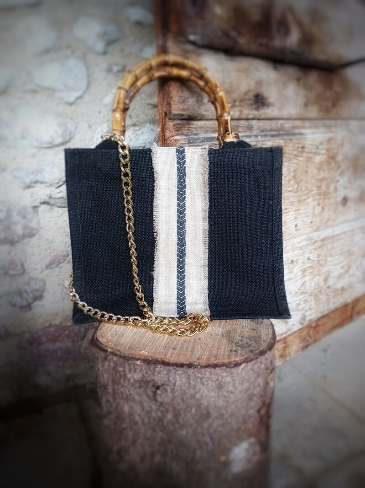
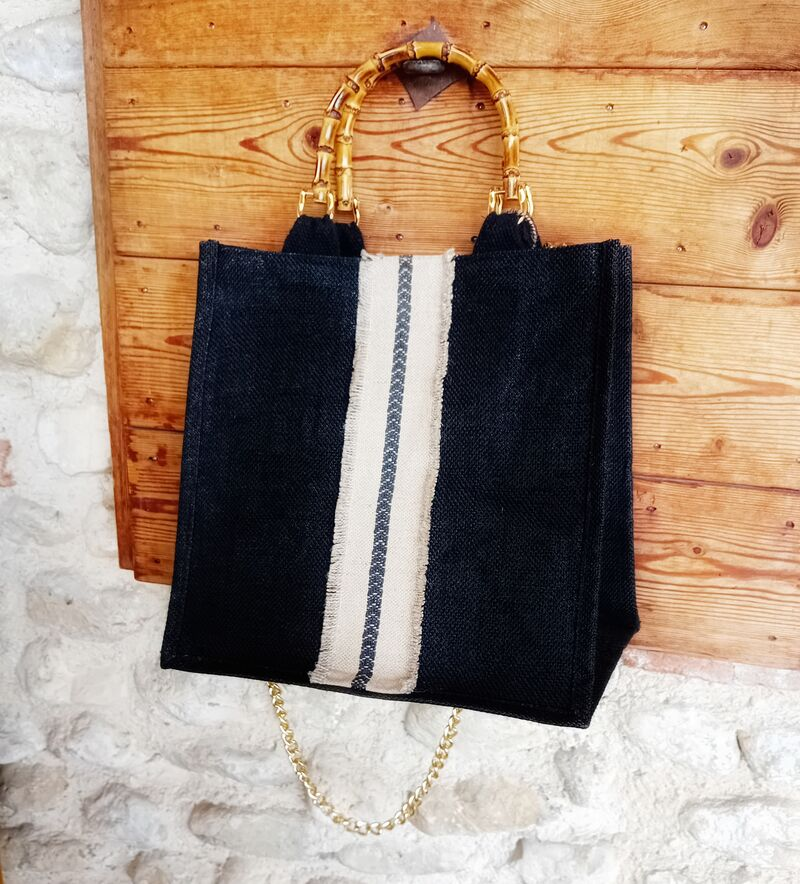
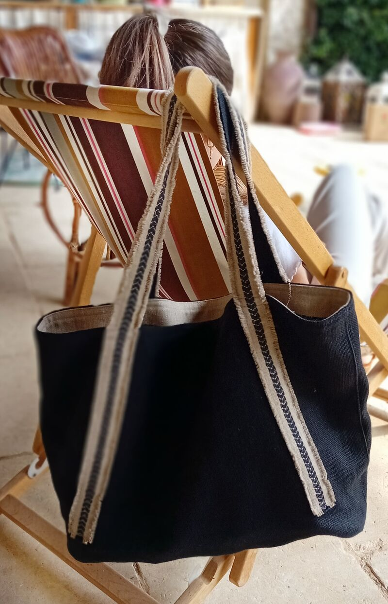
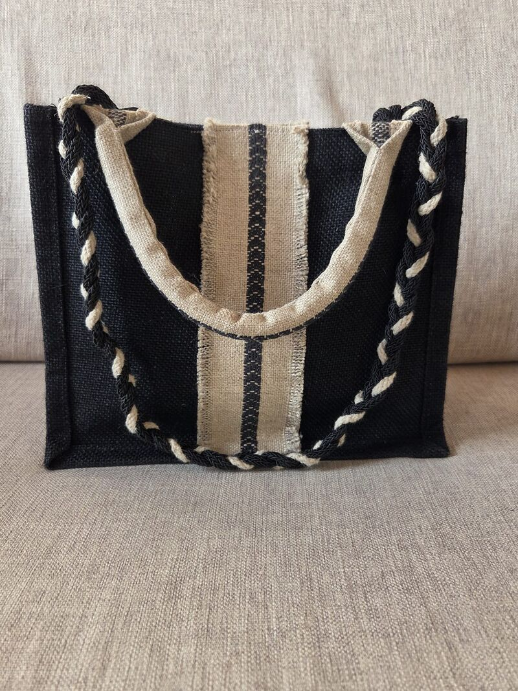
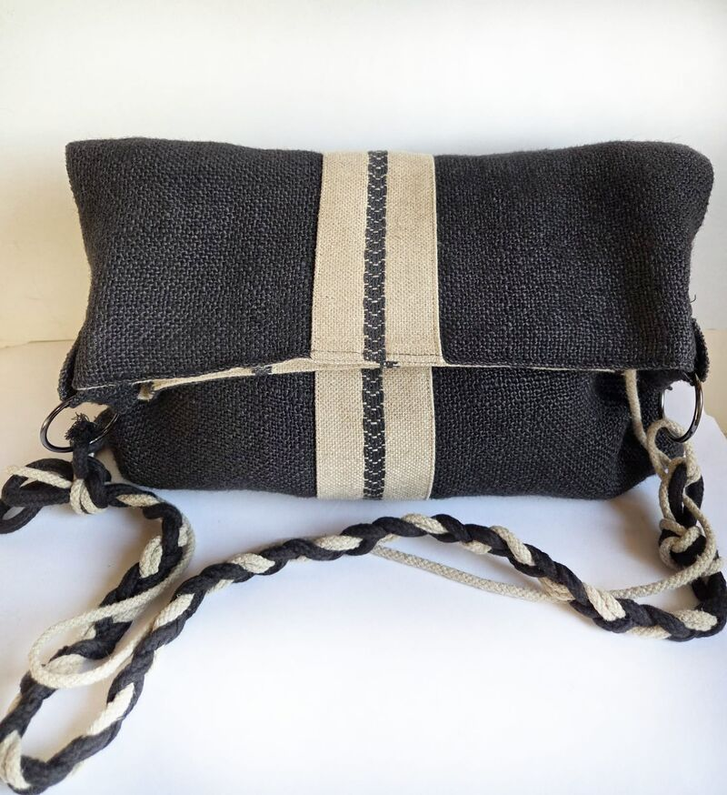
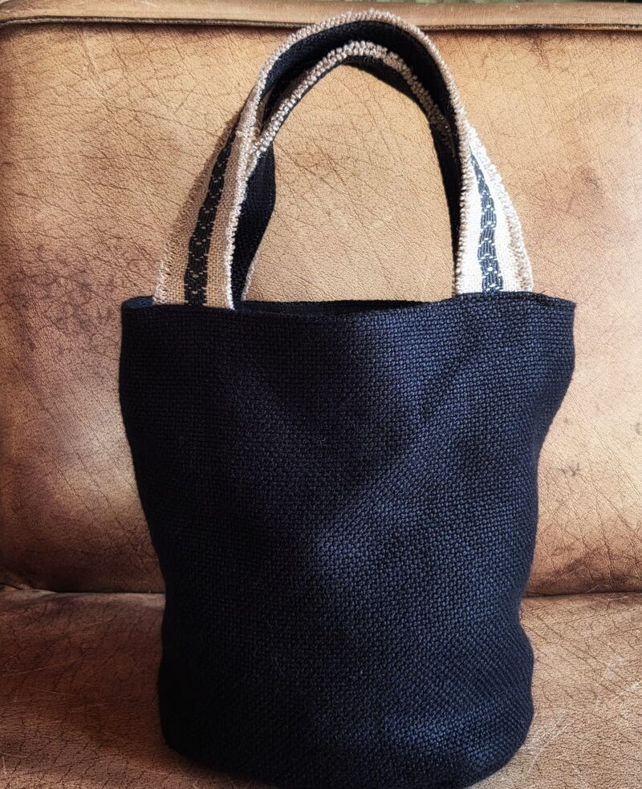

Eva D
Eleganza eco-friendly
Dove la natura incontra lo stile
Fatta a mano in Italia

Eleganza eco-friendly
Dove la natura incontra lo stile
Fatta a mano in Italia
Nata in Italia dall'amore per i materiali naturali e il design consapevole, Eva D crea borse artigianali in tessuto che fondono il calore mediterraneo con un'eleganza senza tempo. Ogni pezzo è realizzato a mano con tessuti eco-friendly, manici in bambù e dettagli dorati — perché il vero lusso risiede in ciò che è fatto con cura.
Scegliamo tessuti eco-friendly e materiali naturali, creando ogni borsa nel rispetto dell'ambiente e delle mani che la realizzano.
Ogni borsa è un pezzo unico, realizzato con cura artigianale. Non esistono due pezzi identici — ognuno porta il carattere di chi lo ha creato.
Linee classiche, texture naturali e dettagli raffinati creano uno stile che trascende stagioni e tendenze.

Eleganza compatta con manici in bambù e tracolla a catena dorata.

Una tote generosa con corpo in tessuto intrecciato e dettaglio manico in bambù.

Una borsa a spalla rilassata con tracolle a righe panna e interno spazioso.

Una tote strutturata con manici intrecciati bicolore e tracolla convertibile.

Una clutch morbida con dettaglio a riga panna e tracolla intrecciata.

Una borsa a secchiello compatta con silhouette arrotondata e manici a righe panna.
Dove la natura incontra lo stile.